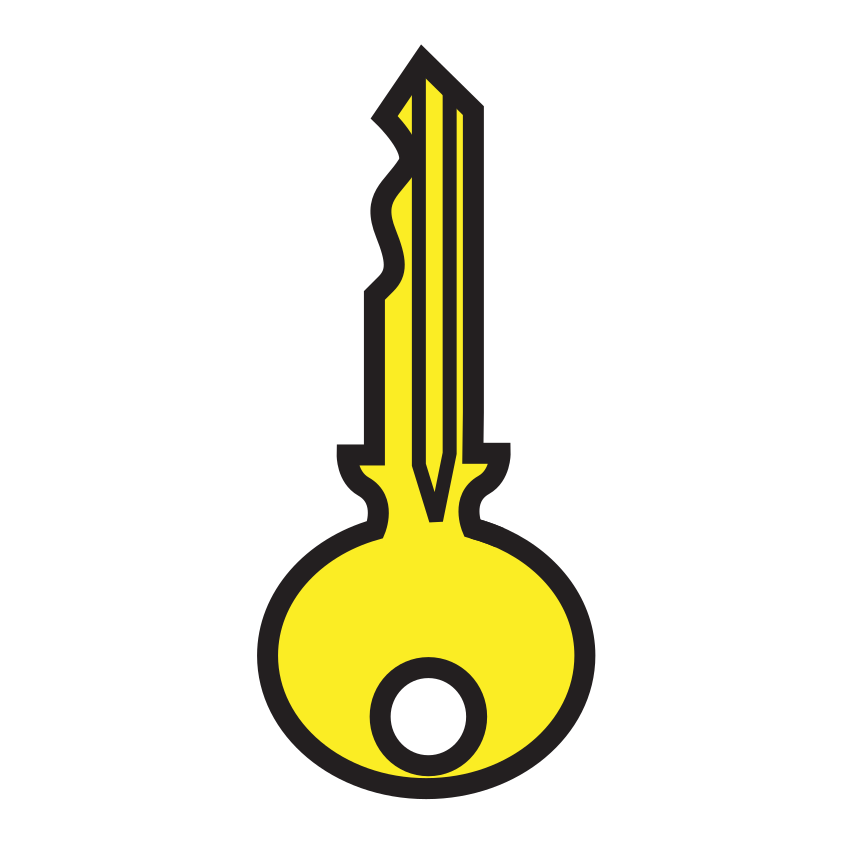

Prénom : Date :
Période 5 · Entraînement A1
Phonologie — le premier son
Le son du début ★ je m’entraîne
Sous-objectif : entendre le premier son (prépare la fiche d’évaluation 5.3).
Consigne : 1. Relie les images dont le nom commence par le même son. 2. Entoure les images dont le nom commence par [i].
★ Défi : trouve trois mots qui commencent par [m].
reconnaître le premier son d’un mot.Seul ☐ · Avec aide ☐ · À revoir ☐
Prénom : Date :
Période 5 · Entraînement A2
Lettres — b et d
Les lettres jumelles ★ je m’entraîne
Sous-objectif : ne plus confondre les lettres jumelles (prépare la fiche d’évaluation 5.4).
Consigne : 1. Entoure toutes les lettres pareilles à celle du début. 2. Colorie en bleu les b, en rouge les d, en vert les p et en jaune les q. 3. Repasse les lettres, puis écris-les sur la ligne.
1
bbdbbdbdbbdb
ddbddbddbdd
★ Défi : avec tes deux mains, fais le « lit » : b à gauche, d à droite. Montre-le à ton voisin.
distinguer b et d.Seul ☐ · Avec aide ☐ · À revoir ☐
Prénom : Date :
Période 5 · Entraînement A3
Écriture — tracés
Les bonds du kangourou ★ je m’entraîne
Sous-objectif : enchaîner des tracés réguliers (prépare la fiche d’évaluation 5.5).
Consigne : 1. Repasse les bonds du kangourou, puis continue-les. 2. Repasse les vagues de l’océan, puis continue-les. 3. Repasse les points en tournant, puis continue la ligne de points.
tracer des arcs, des vagues et des points réguliers.Seul ☐ · Avec aide ☐ · À revoir ☐
Prénom : Date :
Période 5 · Entraînement A4
Nombres — jusqu’à 25
Les glaçons et les étoiles de mer ★ je m’entraîne
Sous-objectif : compter et ranger les nombres (prépare la fiche d’évaluation 5.7).
Consigne : 1. Compte et écris le nombre. 2. Complète les bandes : la première monte, la deuxième descend.
★ Défi : compte de 2 en 2 jusqu’à 20, puis à rebours de 20 à 0.
dénombrer jusqu’à 20 ; compléter la bande numérique.Seul ☐ · Avec aide ☐ · À revoir ☐
Prénom : Date :
Période 5 · Entraînement A5
Matière — flotte ou coule
Ce qui flotte ★ je m’entraîne
Sous-objectif : prévoir puis vérifier (prépare la fiche d’évaluation 5.12).
Consigne : 1. Avant l’expérience, fais une croix au crayon à papier pour dire ce que tu penses. Après l’expérience, repasse en couleur ce que tu as vu. 2. Colorie en bleu ce qui est de l’eau liquide, et en blanc ce qui est de l’eau solide.
1
| | flotte | coule |
|---|
 | le bouchon | | |
 | le caillou | | |
 | le glaçon | | |
 | la clé | | |
 | le ballon | | |
 | la noix de coco | | |
★ Défi : l’iceberg flotte-t-il ? Explique pourquoi on n’en voit qu’un petit bout.
prévoir et vérifier si un objet flotte ; reconnaître l’eau liquide et l’eau solide.Seul ☐ · Avec aide ☐ · À revoir ☐
Prénom : Date :
Période 5 · Entraînement A6
Vocabulaire — sens propre, sens figuré
Les mots du tour du monde ★ je m’entraîne
Sous-objectif : jouer avec le sens des mots (prépare la fiche d’évaluation 5.1).
Consigne : 1. Entoure en bleu les mots de la glace et des voyages, en vert les animaux, en rouge les plantes. 2. La maîtresse lit chaque phrase. Est-ce vrai, ou est-ce une image pour dire autre chose ? Fais une croix.
2
| c’est vrai | c’est une image |
|---|
| Le glaçon est froid. | | |
| Il fait un froid de canard. | | |
| La baleine a une grande bouche. | | |
| J’ai un chat dans la gorge. | | |
★ Défi : que veut dire « avoir une faim de loup » ?
ranger les mots ; distinguer le sens propre et le sens figuré.Seul ☐ · Avec aide ☐ · À revoir ☐
Prénom : Date :
Période 5 · Entraînement B1
Phonologie — manipuler les sons
Le son qui disparaît ★★ je consolide
Sous-objectif : manipuler les phonèmes (prépare la fiche d’évaluation 5.3).
Consigne : 1. Dis le mot sans son premier son. La maîtresse écrit ce que tu entends. 2. Où entends-tu [k] dans le mot ? Fais une croix.
1
 | sans [l] ? | |
 | sans [r] ? | |
| sans [f] ? | |
2
| début | milieu | fin |
|---|
| | | |
| | | |
| | | |
 | | | |
★ Défi : dis « crabe » à l’envers, son par son.
supprimer un phonème ; localiser un son.Seul ☐ · Avec aide ☐ · À revoir ☐
Prénom : Date :
Période 5 · Entraînement B2
Lettres — le son des lettres
Les lettres qui chantent ★★ je consolide
Sous-objectif : relier les sons et les lettres (prépare la fiche d’évaluation 5.4).
Consigne : 1. Écris la lettre du premier son de chaque image. 2. Entoure les lettres pareilles à celle du début.
★ Défi : avec les lettres mobiles, écris « lit », puis change une lettre pour écrire « nid ».
associer un son et sa lettre ; distinguer p et q.Seul ☐ · Avec aide ☐ · À revoir ☐
Prénom : Date :
Période 5 · Entraînement B3
Écriture — mots et phrase
La lettre à Plume ★★ je consolide
Sous-objectif : écrire des mots tout seul (prépare la fiche d’évaluation 5.5).
Consigne : 1. Écris chaque mot en cursive en disant les sons. 2. Copie la phrase en cursive : la majuscule, la virgule et le point d’exclamation.
2
la maîtresse écrit : Bon voyage, Plume !
★ Défi : écris « Plume » sans modèle.
écrire des mots transparents ; copier une phrase avec sa ponctuation.Seul ☐ · Avec aide ☐ · À revoir ☐
Prénom : Date :
Période 5 · Entraînement B4
Problèmes — écarts
Combien de plus ? ★★ je consolide
Sous-objectif : comparer pour trouver un écart (prépare la fiche d’évaluation 5.8).
Consigne : 1. Combien Ana a-t-elle de glaçons de plus que Malik ? Écris le nombre. 2. Le kangourou fait 8 bonds. C’est 3 de moins que le wallaby. Combien de bonds fait le wallaby ? Dessine, puis écris le nombre.
★ Défi : invente un problème « combien de plus ? » avec les manchots.
résoudre des problèmes d’écart.Seul ☐ · Avec aide ☐ · À revoir ☐
Prénom : Date :
Période 5 · Entraînement B5
Espace — le plan
Le plan de l’île ★★ je consolide
Sous-objectif : passer de ce qu’on voit au plan (prépare la fiche d’évaluation 5.10).
Consigne : 1. Trace le chemin de la tortue de l’île à la noix de coco sans passer par le crabe ni par l’étoile de mer. 2. Dessine le plan de ta table vue d’en haut, avec ce qui est posé dessus.
★ Défi : code le chemin de la tortue avec des flèches.
lire et compléter un plan ; dessiner un plan.Seul ☐ · Avec aide ☐ · À revoir ☐
Prénom : Date :
Période 5 · Entraînement B6
Le temps qui passe
Quand j’étais petit ★★ je consolide
Sous-objectif : se représenter le temps de sa vie (prépare les fiches d’évaluation 5.11 et 5.12).
Consigne : 1. Range du plus jeune au plus âgé : écris 1, 2, 3 sous le bébé, l’enfant et l’adulte. 2. Quand sait-on faire ces choses ? Fais une croix. 3. Chez nous, c’est l’été. Au pôle Sud, c’est l’hiver. Entoure ce qui va avec l’été.
2
| bébé | à 3 ans | à 6 ans |
|---|
| faire du vélo sans petites roues | | | |
| boire au biberon | | | |
| écrire son prénom | | | |
| marcher | | | |
★ Défi : raconte une chose que tu ne savais pas faire en septembre et que tu sais faire maintenant.
situer les étapes de sa vie ; se repérer dans les saisons.Seul ☐ · Avec aide ☐ · À revoir ☐
Crédits des images
Les illustrations de ce cahier sont des pictogrammes Mulberry Symbols (Paxtoncrafts Charitable Trust, licence CC BY-SA 4.0, mulberrysymbols.org) et des pictogrammes ARASAAC (auteur : Sergio Palao, propriété du Gouvernement d’Aragon, Espagne, licence CC BY-NC-SA, arasaac.org), complétés des images suivantes. Merci à leurs auteurs et autrices.
- banquise : « Wonders in the Antarctic Sea and Sky » (Openverse) — NASA Goddard Photo and Video, licence CC BY 2.0.